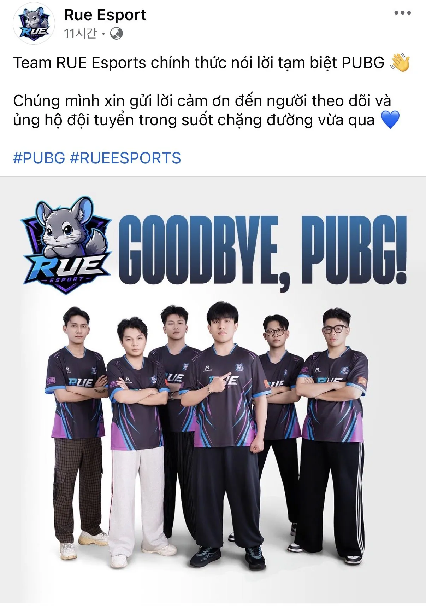

PVS Phase 2 참가하려고 만든 신생 프로팀인데, 하루아침에 리그 폭파되면서 본선 무대 밟아보지도 못하고
강제 해체 엔딩남

PVS Phase 2 참가하려고 만든 신생 프로팀인데, 하루아침에 리그 폭파되면서 본선 무대 밟아보지도 못하고
강제 해체 엔딩남
스팀이 없는 곳에서 이정도의 팀을….?
모바일배그는 프로리그 없나? 그리로 전향하는건 어떠려나 ㅋㅋ
개좆같을건데도 말꺼내는순간 베트콩 암살부대한테 뒤질까봐 말도못할듯ㅋㅋ
ㅋㅋㅋㅋㅋㅋ
불쌍하구만
번역해보니까 말하는 싸가지가 pubg쪽 잘못때문에 해체한다는듯이 적어놨네 ㅋㅋ
베트남 종특임.
무식한게 신념을 가지면 무섭다더니 ㄷㄷ
저럴경우 이미 계약이 다 되어있을텐데...
한푼도 못받고 계약금은 다 날아가는건가..?
고양이 귀엽네 ㅋㅋㅋ
친칠라임
ㅋㅋ 쟤들이라고 뭐 프로의식이있을것 같냐
다똑같은 족속들인데
그냥 게임 많이 한 청년들 ㅋㅋ
굿바이 펍지 이지랄하는거 보면 뭐 펍지 잘못이다 꺼져라 이런 뉘앙스인 것이지ㅋㅋ
이정도로 사태가 커지면 지들끼리 싸움 안나나?
자정작용하거라